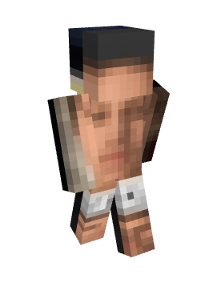

Home
Government
Government Aid
Laws and Legal Issues
Constitution
Home
Government
Government Aid
Laws and Legal Issues
Constitution
Maryland was founded around October 2021 by AR_Civil and Random in the mountains just west of the susquehanna river
Soon after the creation of Maryland, Random wanted to create an industrial powerhouse. The first project he and AR conducted was the creation of a super smelter which is still in use today (although not as effective as other models on the server)
As AR started to play less and less due to college, new members like Firenkyo and Sul4 joined Maryland. this would be the first land expansion since the creation of the state, with Maryland annexxing what is now the northern part of Central Maryland
The politics of early Maryland were notoriously slow, as the systems of government which Maryland would evolve into would take a long time and necessitate a large population for them to be useful. Some notable events, however, was early day competition with L'tekeburg over an island inside the river that now borders the two nations. One of the first acts of international cooperation came between L'enfer and Maryland, signing the "Allies" treaty, securing an alliance between the two nations.
As the server's economy developed, Random would open a shop who's profits would partly go to the Maryland treasury. The money was then used to buy materials to fund projects in Maryland, one of the biggest being the revamping of the road system into its modern state, and making the western highway compatible for horses.
The habit of spending money to develop Maryland's infrastructure would be a continual throughline, ending up in the contstruction of the majority of infrastructure in Maryland.
Slowly, as the population of Maryland increased and so did the votality of the economy, Maryland began to gain power both economically and influence wise. Now the largest player on the block, Maryland began to develop its political structure further. This would coencide with the soon-to-be market crash caused partly by a recession at the time and then hammered shut after Joey publicated his farms.
Maryland would stop developing after the market crash, and would not continue until after the subway project had begun and Chillsear was added to Maryland which caused an influx of players to join.
The new relevance and issues in Maryland would give room for the development of political structures, leading Maryland into its modern, superpower status.
Random is the current president of Maryland and the senator of Central Maryland
Lee is the current senator of Flora

Rabaluda is the current senator of Chillsear

Alebello is the current senator of Duckyland